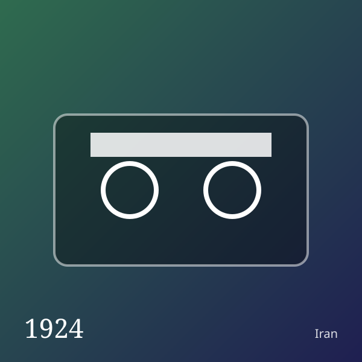

Qamar-ol-Moluk Vaziri, 1924–25

Background: first concert at Tehran's Grand Hotel in 1924, the first public appearance of an Iranian woman singer before men without the veil. Featured on more than half of the 1925 sessions per the Honest Jon's compilation; later Polyphon 78s from 1927–28. One disc mourns the assassinated poet Mirzādeh Eshqi.